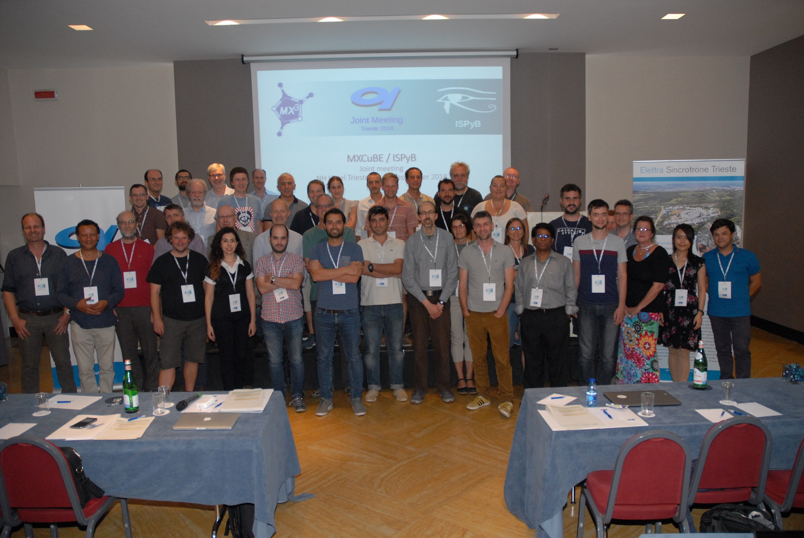

12th. MXCuBE meeting @ Elettra (Trieste, Italy), 11-13 September 2018

Status reports
ESRF
EMBL
ALBA
MAX IV
Soleil
HZB
Elettra
GPhL
DESY
MXCuBE developement highlights
Status report of MXCuBE3
Incorporation of Global Phasing workflows in MXCuBE
Abstract Beamline Interface
MXCUBE3: Installation and user experience
MXCuBE refactoring
Hardware Objects - Perpetum mobile
MXCuBE3 UI-API
A practical example of the proposed UI-API
Refactoring Qt version of MXCuBE: structural improvements and new API
Minutes and reports
Developers' Committee summary
Scientific Committee summary
MXCuBE-ISPyB joint dicussion, Autoprocessing and metrics